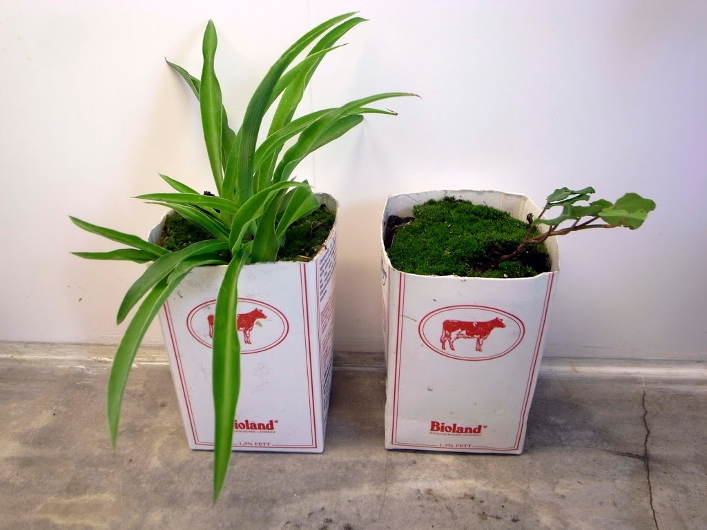
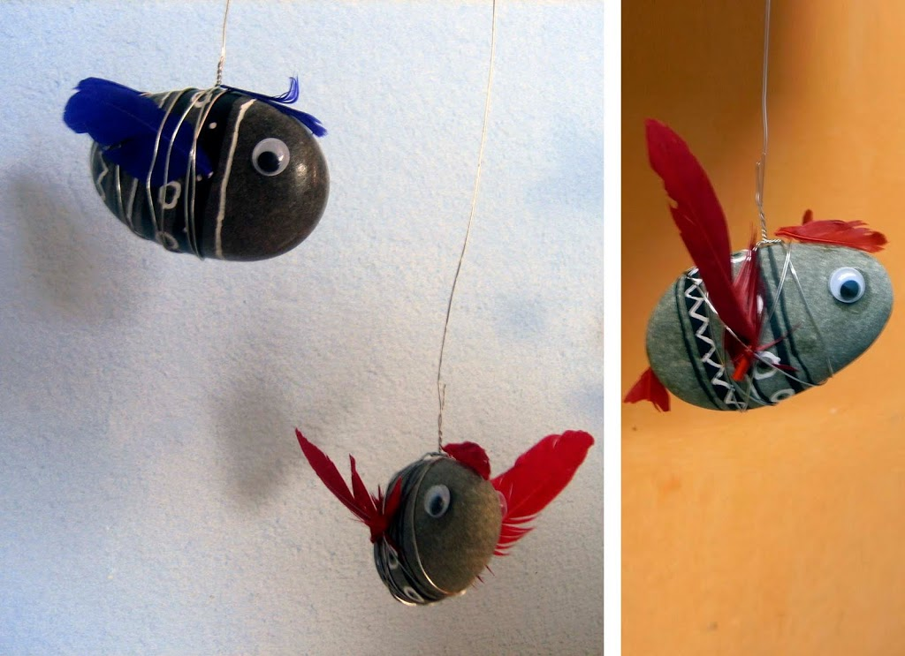

Pinterest
Instagram
ES
EN
DE
☰ Menú
Inicio
La casa
Accesorios
Decorar
Instrucciones
Ilustración
Cantimploras personalizadas
Cuaderno de manualidades y actividades 01
App Not Online Anymore
Blog
Fiestas
Navidad
Pascua
Halloween
Carnaval y disfraces
San Valentín
Cumpleaños
Día de la Madre/Padre
Vuelta al cole
Estaciones
Primavera
Verano
Otoño
Invierno
Qué hacer
Juguetes
Juegos
Imprimibles
Recetas y comida
Decoración
Pintar
Experimentos
Al aire libre
Aprender
Animales
Regalos y joyas
Construir y trucos
Otras manualidades
Material
Papel
Cartón
Rollos de papel
Reciclaje
Piedras
Hojas y naturaleza
Tela, coser y tejer
Inicio
›
Blog
Blog
Fiestas
Navidad
69
Pascua
43
Halloween
27
Carnaval y disfraces
36
San Valentín
15
Cumpleaños
13
Día de la Madre/Padre
4
Vuelta al cole
10
Estaciones
Primavera
19
Verano
42
Otoño
22
Invierno
32
Qué hacer
Juguetes
79
Juegos
125
Imprimibles
49
Recetas y comida
95
Decoración
97
Pintar
64
Experimentos
19
Al aire libre
64
Aprender
67
Animales
116
Regalos y joyas
91
Construir y trucos
81
Otras manualidades
53
Material
Papel
94
Cartón
61
Rollos de papel
23
Reciclaje
121
Piedras
33
Hojas y naturaleza
53
Tela, coser y tejer
42
Actividad
Escalera de números
Actividad
Dibujos para la ventana
Hojas
Tejer con hojas de caña
Tela
Bolsas del almuerzo pintadas
Otoño
Personitas de bellota
Actividad
Molinillos de viento
Conchas mariposa
Papel
Más que un disfraz
Juguete
Regata de barcos de nuez
Rollos papel
Torres de papel higiénico
Jugar
Carrera de caracoles
Piedras
Colgante de piedras con agujero
Nuéz
Pez de pistachos
Actividad
Farolillos de colores
Juguete
Barcos de corcho
Material
Macetas de tetrabrik

Material
Peces de piedra y plumas

Actividad
Nombres con letras de sopa
← Más recientes
Página 40 / 40